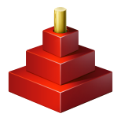

Red by Example - an accessible reference by exampleLast update on 20-Dec-2019aboutindex parse vid series draw help about links contact
This website is an initiative of Arie van Wingerden.
For a long time I have been a great fan of Rebol and I regretted that
things went awry:
1. the original Rebol developer, Carl Sassenrath, just stopped
to lead the way and more or less disappeared
2. it took a very long time before Rebol became Open Source;
this hampered further development
3. there is a Rebol 3 community, lead by Atronix and Saphirion,
but it is very difficult to know where you can find things,
download stuff etc.
In the meantime Nenad Rakocevic (a.k.a. DocKimbel) started with Red.
When I (very late) took interest in Red, I suddenly realized that Red was
"the answer to my prayers"!

Red has everything Rebol had and much more. The sheer possibilities are
endless, now we can compile for so many platforms.
I see a great future for Red in the embedded (Internet Of Things) world.
I hope you will enjoy this website.
We wish to say "thank you" to the following people:
1. Carl Sassenrath for his amazing language Rebol
2. Nenad Rakocevic for his visionary plans with Red and for his
perseverence
3. Mike Parr who wrote a lot of documentation for this site, and
maintains it.
4. everyone in the Red room at Gitter who has answered any of my
(sometimes silly) questions
|